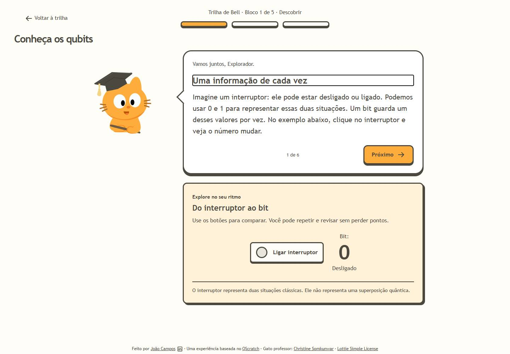
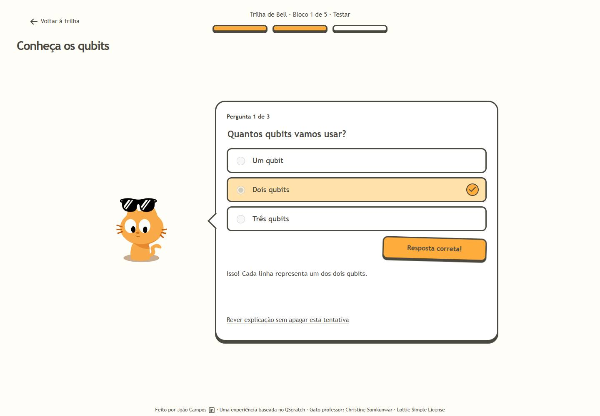
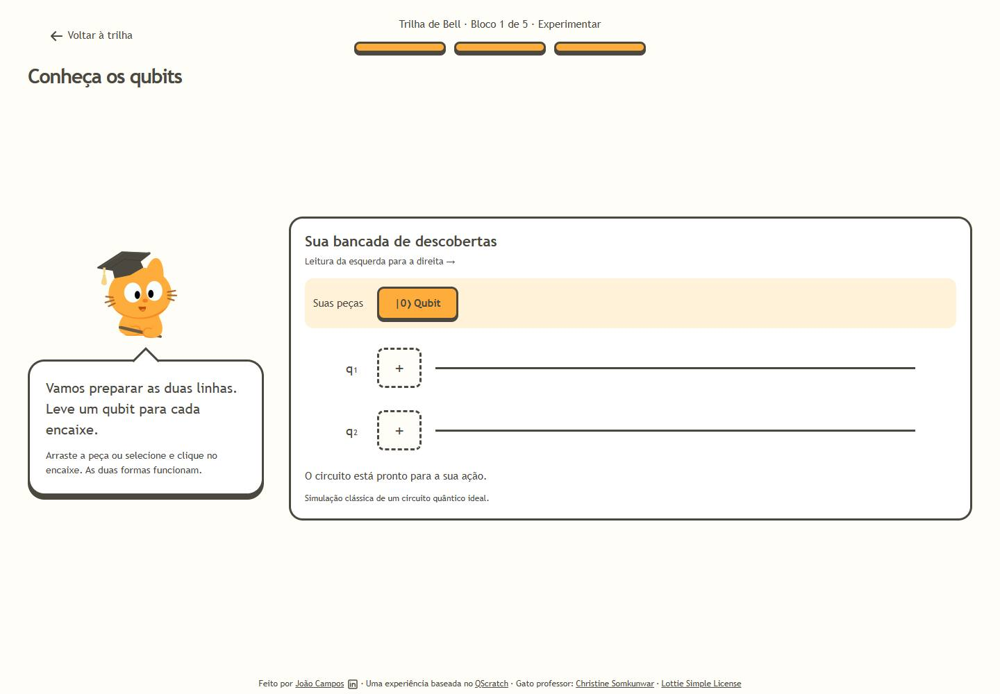
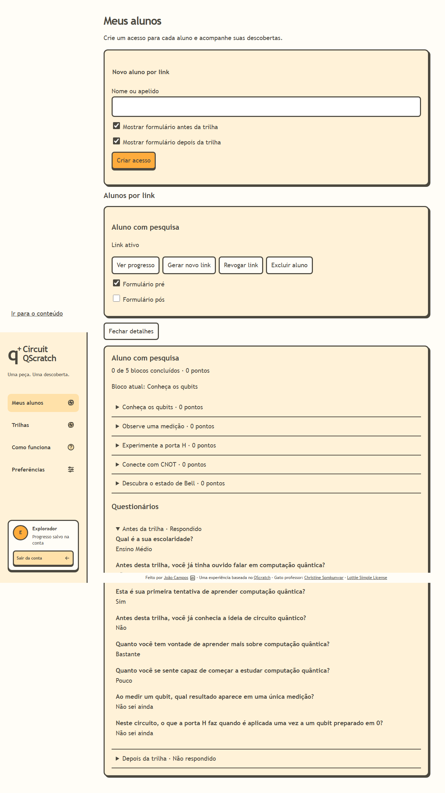

Plataforma: apoio à demonstração
Capturas usadas na entrega final. Documentam a interface, não o desempenho dos quatro participantes. A interface ao vivo pode incluir ajustes posteriores.
Descobrir

Testar

Experimentar

Acompanhar
